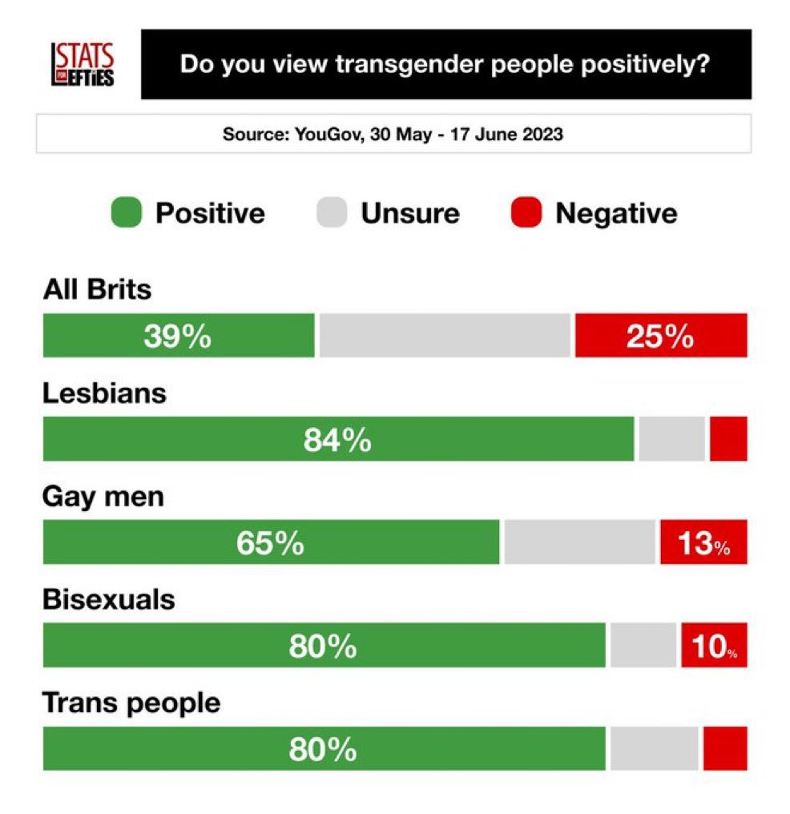
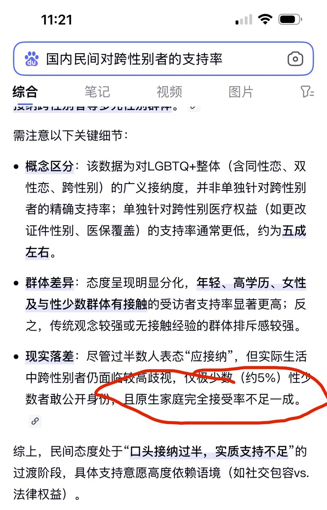

✟AiLiAnSong✟
@AnqilaSong
@SonogamiRinneTS 中国没有绝对禁止和支持未成年进行hrt，现在绝大部分买药都是在海外买的


是Rinne酱呀
@SonogamiRinneTS
关于为什么英国反跨的人仅仅占了25%就足以让官方禁止未成年跨性别者获取医疗支持，而中国即使超过90%的家长反跨官方却依然没有禁止这样做，个人简单分析了一下（注意，这里只讨论影响未成年医疗干预政策的因素本身，这并不是判断一个国家地区跨性别群体生存状况的唯一指标）： https://t.co/ukw1rylbIx